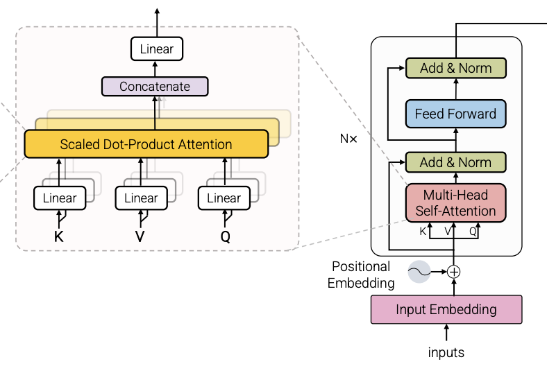

BitNet Scaling 1-bit Transformers for Large Language Models
2024-05-24
Modern Large Language Models (LLM) have strong performance1 in many tasks, but they are expensive to run: they use a lot of memory (due to weights) and a lot of energy (due to matrix multiplications).
Assuming we want to keep the Transformer network architecture that powers modern LLM, one way to reduce the cost is by quantization: use lower precision numbers. Modern transformers are usually trained using 32-bit floating-point or 16-bit floating-point. If we can use 8-bit numbers, or, as this paper suggests, use 1-bit number, we can drastically reduce the amount of memory and energy required to use these models.
The two main ways of quantization is Post Training Quantization (PTQ), and Quantization Aware Training (QAT). As the name suggests, PTQ is done after training: training happens in high precision, and the weights are quantized after. PTQ is easier to apply, as it doesn’t not require changes to the training pipeline. However, this usually leads to loss in performance. QAT will usually lead to some loss in performance as well, but not as much as PTQ, because the model is trained to account for this loss in precision. However, QAT is tricky to train: there are stability issues.
The paper proposes investigates QAT for 1-bit Transformer, known as BitNet.
The first key idea is a BitLinear layer, instead of the usual nn.Linear (or tf.keras.layers.Dense). This layer takes in 1-bit (binarized) weights, activations are 8-bit, and outputs are 8-bit too. All nn.Linear layers in a base Transformer model is replaced by BitLinear. Notably, the Q, K, V weight matrices, embeddings, are not 1-bit (i.e. 8-bit).
The paper describes in detail how the weights are binarized (weights are centralized to be zero-mean, a scaling factor) and also how activations are quantized (activations before non-linear functions are asymmetrically quantized, all other activations are symmetrically quantized).
During training, latent weights are maintained in high-precision for gradient updates, but are binarized on the fly for the matrix multiplication in BitLinear. This means that this training process doesn’t save memory during training. However, during inference, the latent weights are not used, only the fixed binary weights are used, so overall there is still less memory.
The second key idea is the way it does layer normalization, it’s kind of folded into the quantization step.
2

Third key idea for scaling up training is to parallelize the model during training. The quantization parameters depend on the entire tensor, so we can’t break up the tensors to parallelize them. The paper suggests to break up the weights and activations into group and estimate each group’s parameters, known as Group Quantization.
The paper also found that learning rate when training BitNet needs to be higher than when training high precision Transformers in order to converge.
Results
They fit a scaling curve to BitNet, and found that it was predictive of loss to larger BitNet models. Also, the loss gap between FP16 and BitNet shrinks as model size grows.
The authors also compared with various PTQ models, and found that BitNet performs better.
Questions
The authors did not share latency and throughput numbers (expected to be much less), but did in their follow-up paper.
Also, only the linear layers are binarized, what about the attention weights? It is true that as models scale up, the computation cost of the attention is smaller than the linear layers, but it is still a substantial portion.